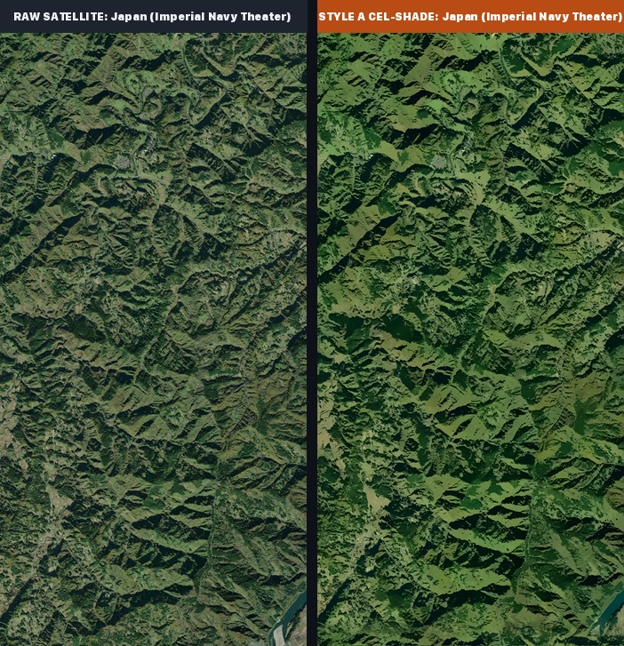
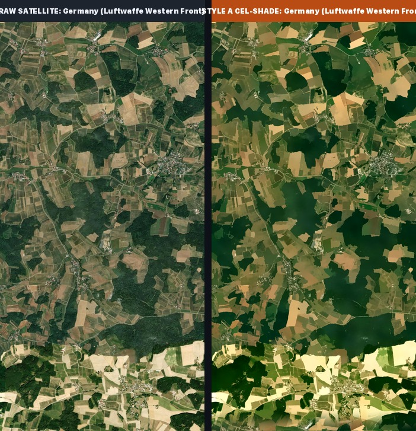
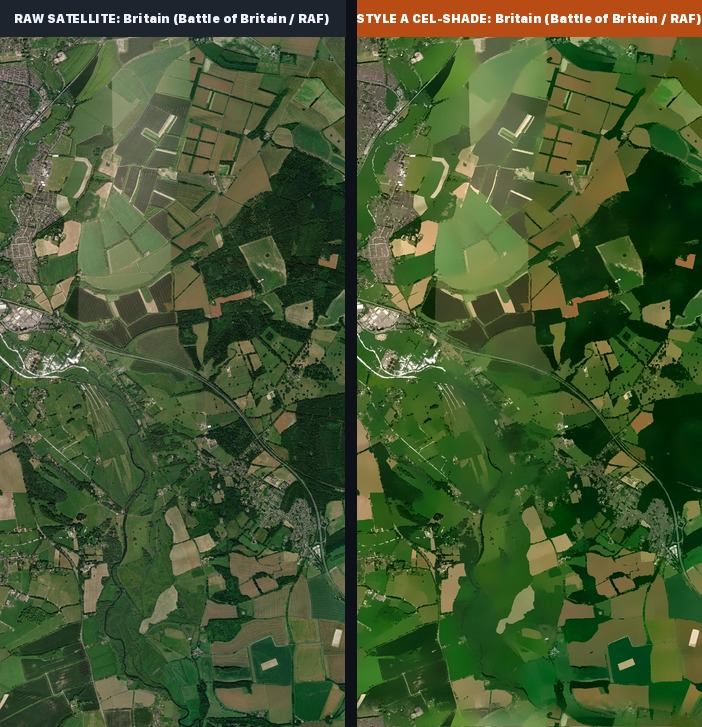
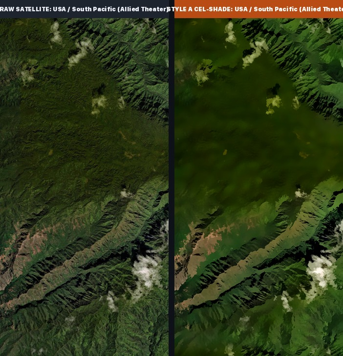
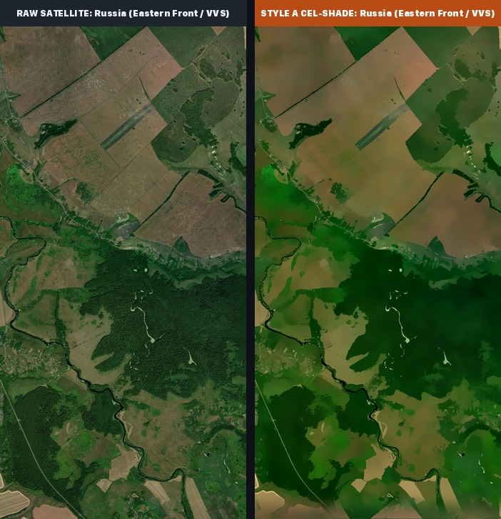
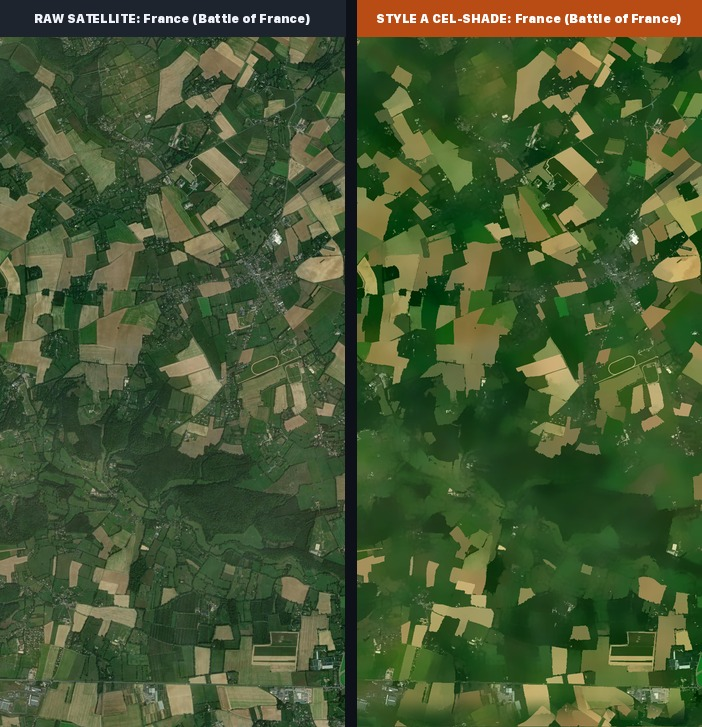
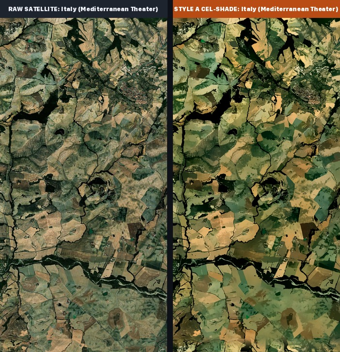
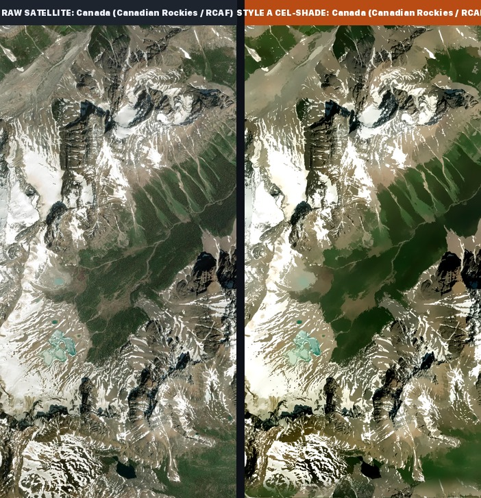
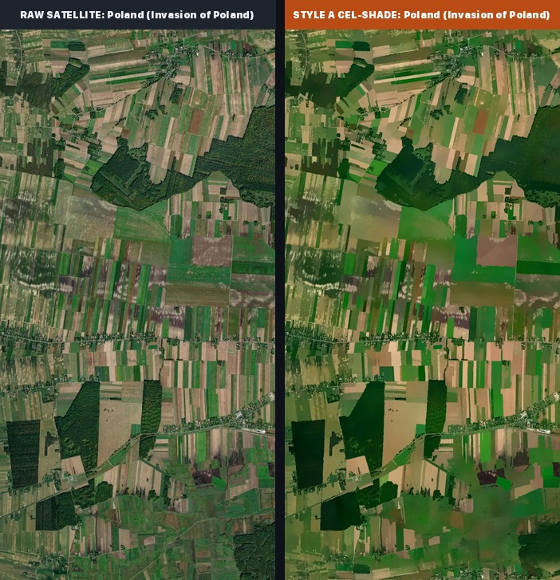
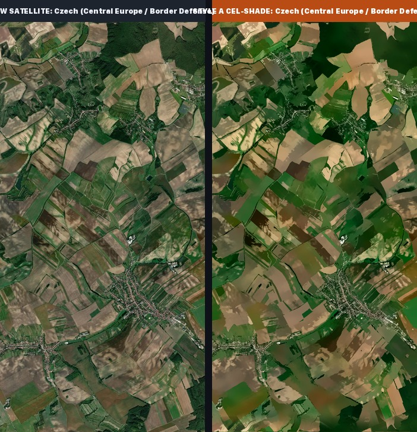

Reviewing every country terrain to guarantee 100% appropriate historical rural terrain: NO golf courses, NO airports, NO modern highways, NO sensitive facilities. Raw satellite vs. Style A Cel-Shade.
Landscape Check: Timeless mountain valleys, Shinano river bend, pine forests, terraced rice paddies. Pure nature, NO golf courses or modern facilities.

Landscape Check: Traditional rolling Bavarian farmland, agrarian patchwork plots, forest clusters, dirt tractor tracks.

Landscape Check: Historic English rolling chalk downs, hedgerow patchwork fields, copses, winding country lanes.

Landscape Check: Lush tropical green mountain ridges, jungle valleys, pristine volcanic rainforest.

Landscape Check: Open agricultural plains, historic WW2 tank battle territory, expansive wheat plots, shelterbelt forests.

Landscape Check: Historic Normandy hedgerows (bocage), rural pastures, apple orchards, stone farm hamlets.

Landscape Check: UNESCO timeless agricultural hills, golden wheat contours, olive groves, winding cypress roads.

Landscape Check: Majestic snow-crested granite peaks, turquoise glacial alpine lakes, avalanche chutes, and deep evergreen pine valleys.

Landscape Check: Pure rural agrarian strip fields (narrow ribbon plots of wheat and clover), pine woods, and dirt tracks. Zero city housing grids.

Landscape Check: Famous Moravian rolling waves of green and ochre soil, vineyard contours, rural tranquility.
